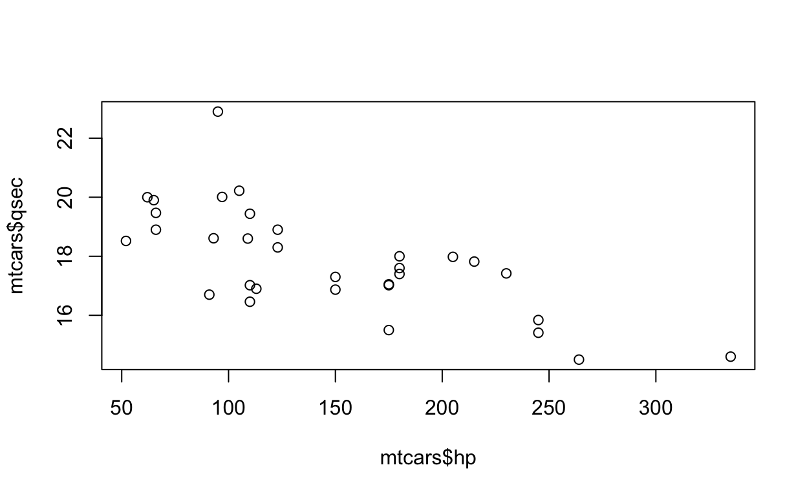

Introduction
Welcome to the LA’s BEST summer camp! In this lab, we will learn R, one of the most popular programming languages in the world of data.
R is a high-level computer language developed by Ross Ihaka and Robert Gentleman in 1993. It provides a comprehensive tool kits of statistical analysis and a variety of communicating techniques to present and share the work (graphics of publish quality, LaTeX-style documentations, interactive shiny apps, …). The most exciting feature of R is a user-friendly library management system. You can extend R functionality by install packages into your library (which will be covered later). With the help of packages, you can not only conduct the most cutting-edge data analysis, but also create animation plots, write books and build your own personal website.

An example of the powerful R graphics library. You can learn more about it in The R Graph Gallery
This tutorial will cover the basic stuff of R for beginners of diverse background. Don’t worry, no prior knowledge is required to learn R. R is not hard and full of fun!
Basic Command
Variables
As future data scientist, the first thing we need to do is to store data into an object. Such object is usually called variable in programming. In R, a variable not only stores data, but also keeps statistical models, predictions, and basically any R output. It’s simple to create a variable: just come up with a unique name then add a value to it by using <- or =. (variable name can be a combination of character, number, . and _, however, it should start with a character).
year <- 2020
program <- "LA.BSET"year and the other is a character whose name is program. In R, any value quoted by " or ' is treated as character. Now try to create some variables and display them in the console.
lastyear <- 2019
lastyearFunctions
Function is a wrapper of codes. We rely on functions to manipulate variables and conduct data analysis. Suppose we have a function named fun, we can call this function by type fun() in the console and add parameters in the parenthesis. For example, rep() is a useful built-in function which replicates the variables. Let’s replicate year by 3 times.
rep(year, 3)## [1] 2020 2020 2020It’s important to read the help file when you encounter a new function and don’t know how to use it. To get help, type ?function.name in the console or directly search it in the Help tag of the Rstudio.
?paste in the Rstudio console, read the help file and use paste to concatenate year and program.
paste()Operators
There are 2 types of operators in R, arithmetic and logical operators.
| Arithmetic | Description | Logical | Description |
|---|---|---|---|
+ |
addition | < (<=) |
less than (or equal to) |
- |
subtraction | > (>=) |
greater than (or equal to) |
* |
multiplication | == |
exactly equal to |
/ |
division | != |
not equal to |
^ |
exponentiation | ! |
negation |
%% |
modulus | | |
OR |
%/% |
integer division | & |
AND |
==, which can compare both numeric and character variables. Try the operators in the exercise with the provided variables or create variables by yourself. Figure out the logic of modulus and integer division.
a <- 10
b <- 3
c <- log(6) # this function computes natural logarithms of 6
a + b
a^2
b > c
# try modulus and integer divisionPlay with Data
1. Data input
Importing data into R is fairly simple. .csv files are the most commonly used data type in R. To input such file, we use the built-in function read.csv. For files with extension .txt, try another generic function read.table.
2. Select observations and variables
3. Rename variables
4. Deal with categorical variables
Plot
In this section, we will use the mtcars data set to show how to plot in R. Let’s read in the data and recode the categorical variables. This data set was extracted from the 1974 Motor Trend US magazine, and comprises fuel consumption and 10 aspects of automobile design and performance for 32 automobiles (1973–74 models).
data("mtcars")
mtcars <- within(mtcars, {
vs <- factor(vs, labels = c("V", "S"))
am <- factor(am, labels = c("automatic", "manual"))
cyl <- ordered(cyl)
gear <- ordered(gear)
carb <- ordered(carb)
})1. Scatter plot
A scatter plot can reveal the patterns of correlation between two variables. For mtcars, hp represents the horsepower of the automobiles and qsec is the 1/4 mile time. We now use a scatter plot to explore the relationship between these two variables.
plot(mtcars$hp, mtcars$qsec)
As horse power increases, the time the vehicle spends on 1/4 mile decreases. Or we can say the 1/4 mile time is negatively associated with the horse power.
Now it’s your turn to explore the relationship between miles per gallon (mpg) and horse power (hp).
2. Histogram
A histogram is a graphical display of continuous data using bars of different heights. The height of bar represents the number of observations in a specific data range. We can use histogram to determine the statistical distribution of the variable of interest. For example, let’s plot the histogram of mpg by function hist.
hist(mtcars$mpg)We can change the label, title and the color of specifying a few additional parameters.
hist(mtcars$mpg, main = "Histogram of miles per gallon", xlab = "miles per gallon (mpg)", col = "blue")
Here, main change the titles as you want, xlab specifies the label of x-axis and col changes the fill color of the bar. Actually, these additional parameters are shared by most generic plot function in R. Refer to Graphical Parameters for more details.
hp. Specify the histogram title as “Histogram of horse power” and the label of x-axis as “horse power”. Fill the bar by color “red”. Does the shape of histogram of horse power differ from that of the mpg?
3. Barplot
Similar to the histogram, barplot exhibits the counts of a categorical variable. However, before we use the function barplot in R, we need to first create a count table for the categorical variable. This is achieved by the function table().
counts <- table(mtcars$gear)
counts##
## 3 4 5
## 15 12 515 automobiles have 3 forward gears, 14 have 4 and only 5 have 5. Now we can use the barplot() function to create barplot.
barplot(counts, main="Barplot of forward gear",
xlab="Number of Gears")
carb.
# which vehicle has 5 forward gear?
# barplot for carb
counts <- table()
barplot4. Boxplot
A boxplot is a method for graphically depicting groups of numerical data through their quartiles. From the bottom to the top, the line of boxplot represents minimum (excluding outliers), first quartile (Q1, or 25% percentile), median (Q2, or 50% percentile), third quartile (Q3, or 75% quartile). Boxplots can be created for individual variables or for variables by group. For example, we can create a boxplot of pooled mpg by using function boxplot
boxplot(mtcars$mpg, main = "Boxplot of mpg") Alternatively, we can create a boxplot by group. Still take the
Alternatively, we can create a boxplot by group. Still take the mpg as an example and draw boxplots of mpg by the number of cylinders cly.
boxplot(mpg ~ cyl, data = mtcars, main = "Boxplot of mpg by cylinder group",
xlab = "Number of Cylinders", ylab = "Miles Per Gallon")
Here mpg ~ cyl represents creating a boxplot of mpg by group of cylinders. Parameter data tells the function boxplot which data set we want to use. Besides, you may have noticed, ylab chage the label of y-axis just the same as xlab.